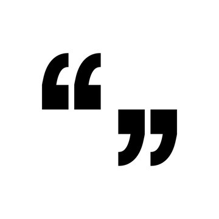
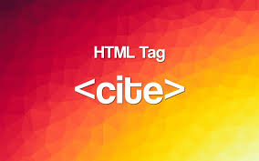

O Elemento HTML "blockquote" (ou Elemento HTML de citação de bloco) indica que o texto incluído é uma longa citação. Normalmente, este é processado visualmente pelo recuo (ver Notas (en-US) sobre como mudá-lo). A URL para a fonte da citação pode ser dada usando o atributo cite, enquanto uma representação de texto da fonte pode ser dada usando o "cite" elemento.
blockquote
Este elemento inclui os atributos globais (en-US). cite: Uma URL que designa um documento de origem ou mensagem para a informação citada. Este atributo destina-se a apontar para informações explicando o contexto ou a referência para a cotação.
Cite
As fontes em itálico são geralmente de natureza cursiva, geralmente usando menos espaço horizontal do que suas contrapartes sem estilo, enquanto as faces oblíquas geralmente são apenas versões inclinadas da face regular. Quando o estilo especificado não está disponível, as faces em itálico e oblíqua são simuladas pela inclinação artificial dos glifos da face regular (use font-synthesispara controlar esse comportamento).
Font-Style